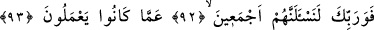
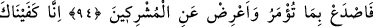
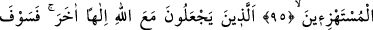
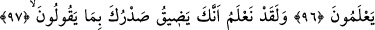
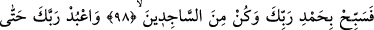
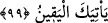
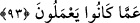

HEPSİNİ SORGUYA ÇEKECEGİZ
92. Rabbin hakkı için, mutlaka onların hepsini sorguya çekeceğiz.
93. Yaptıklarından dolayı.
94. Sana emrolunanı açıkça söyle ve ortak koşanlardan yüz çevir!
95. (Seninle) alay edenlere karşı biz sana yeteriz.
96. Onlar Allah ile berâber başka bir tanrı edinenlerdir. (Kimin doğru olduğunu)
yakında bilecekler!
97. Onların söyledikleri şeyler yüzünden senin canının sıkıldığını andolsun
biliyoruz.
98. Sen şimdi Rabbini hamd ile tesbih et ve secde edenlerden ol!
99. Ve sana yakîn (ölüm) gelinceye kadar Rabbine ibâdet et!
“Rabbinin hakkı için” kıyâmet günü ister Kur’an’ı bölüp ayıranlardan olsun, ister
olmasın “mutlaka onların” kâfir sınıflarının “hepsini sorguya çekeceğiz.” Azarlamak
ve paylamak üzere onlara ‘Niçin böyle yaptınız!’ denilecek. “İşte o gün insana da
cinne de günahı sorulmaz.” (er-Rahmân, 55/39) âyeti ise yaptıkları kendilerince de
mâlûm olsun diye onlara ‘Neler yaptınız? diye sorulmayacaklardır, anlamındadır.
Çünkü, her şeyi bilen Melik’in öğrenmek amacıyla soru sorması muhâldir. Âyetteki bu
sorunun onların yaptıklarına karşılık vermekten mecaz olması da câizdir. Çünkü karşılık
vermek, sorduktan sonra mümkün olur.
93. Yaptıklarından dolayı.
“Yaptıklarından dolayı” Dünyâdaki sözlerinden, yaptıklarından ve yapmadıklarından